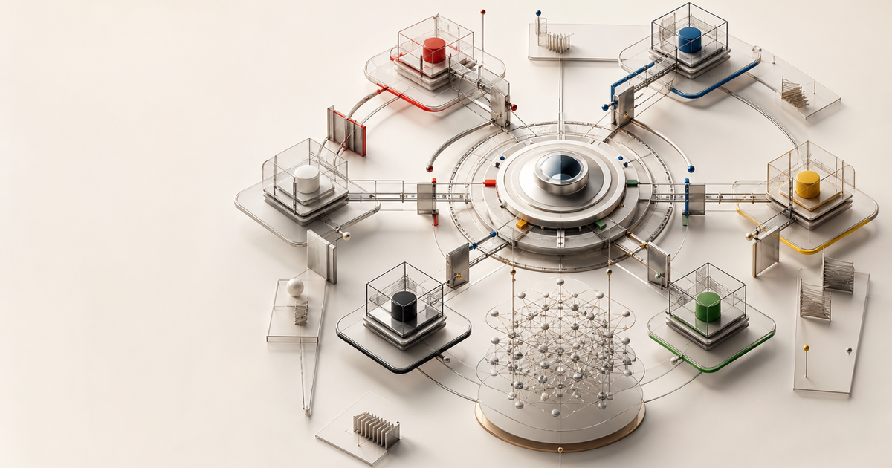

Complete
Planner
Mapped scope and dependencies
The multi-agent meta-harness
TM8 turns a collection of agents, models, and tools into one coherent team—working from shared context, inside a workspace you can actually see and steer.
Current objective
Mapped scope and dependencies
Validating product evidence
Needs approved research context
More capable agents need a more capable way to work together.
Why TM8
Launching another agent is easy. Understanding the whole system—who has the context, which model is acting, where work is blocked, and what needs your judgment—is the difficult part.
Useful decisions disappear across terminal windows, chat tabs, and provider-specific histories.
Each handoff restarts the explanation. Agents repeat work or move forward with different assumptions.
You learn about a consequential choice after it has already propagated through the run.
One graph connects the objective, every teammate, every session, every message, and the outcome.
How it works
TM8 does not ask you to bet on one model or abandon the tools that already work. It coordinates them around a durable operating model.
Bring what works
 tm8
tm8Shared entity graph
Gain one workspace
One orchestration layer. Many possible teammates.

Independent agents. One connected mission. The graph keeps work, context, conversation, and evidence attached while each teammate moves.
Human control, built in
TM8 keeps people at the level that matters: setting intent, shaping context, resolving ambiguity, and authorizing consequential action.
Every live work session has a place, a purpose, and a visible relationship to the objective. Know what is active, what changed, and who needs help.
Planner linked the launch brief to 3 research notes
Researcher asked Writer to verify a product claim
You approved the context handoff
Writer resumed with the approved evidence
Send a durable message into a live session, answer a question where it was asked, or steer the coordinator from the owning task. The route and reply stay with the decision.
Durable handoff retained with the work
A session’s access posture and reasoning effort are separate launch controls. Child access inherits only when its flag is omitted; guarded completion remains explicit and reviewable.
Context that compounds
In TM8, tasks, docs, messages, teammates, sessions, files, commits, and outcomes are not loose artifacts. They are connected entities with one discussion shape and a traceable history.
Stop rebuilding context. Resume a session, hand work to another model, or return next week with the relationships intact.
The TM8 field guide
The field guide spans 55 interactive plates across 10 chapters. The same graph grammar runs through the product, so every capability remains understandable as your team grows.
Learn TM8 by seeing it
Deterministic interactive proofs show the system in motion. Play, step, or scrub the derivative replays here, then watch captures from the exact shipped Help plates below.
Captured from shipped Help
These silent recordings preserve the exact Help visuals and state sequence. Every capture carries its plate number, slug, artifact revision, and source SHA.
A request becomes a task while thread and entity graph update as two views of the same run.
A teammate, task, memory, context, worktree, mode, and access posture resolve into one real session.
A human and two agents use different surfaces while one task id and one guarded version line stay authoritative.
One coordinator splits a task into three worktrees, handles a blocker and sibling reply, then fans the result into one report.
Two runs make the effect visible: remembered task context enters before work and prevents the same failure from repeating.
Two real teammate sessions materialize separate nodes while an orchestrator steers the same approved graph.
Recordings are derivative media; the canonical proof remains the unchanged, sandboxed interactive HTML in tm8 Help. View capture provenance ↗
Built for an open agent world
Use the right intelligence for each kind of work without moving the objective to another system.
Sessions run against real projects and tools; the graph keeps their collaboration coherent.
Conversation belongs to the work it changes. Relationships stay visible beyond a single thread.
Agents can move fast without making ownership, permissions, or judgment ambiguous.
Your next teammate is already here
Coordinate the work. Keep the context. Stay in control.
01 / The objective
Give the team a clear objective. TM8 makes it the shared anchor for every session, message, document, and decision that follows.